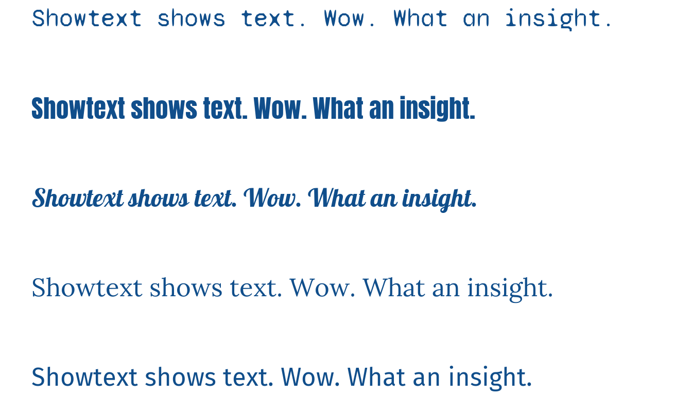
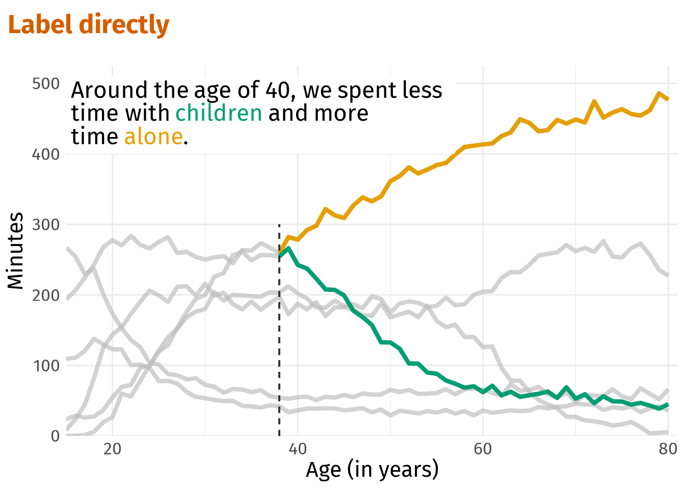
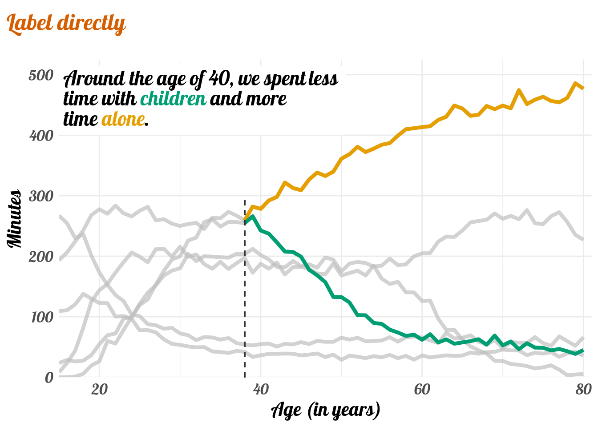
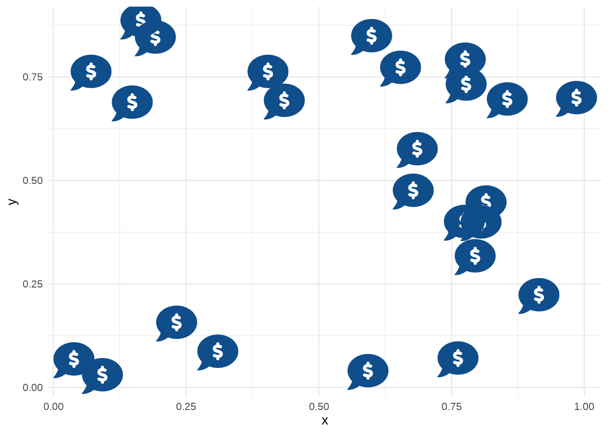

How to use Fonts and Icons in ggplot
This is a short tutorial on how to import fonts and icons in R using the showtext package.
Visualization
For some reason, using other than the default font in plots has been a major problem for me in R. Supposedly, one can use the extrafont package to manage all of that but I found it too cumbersome. Instead, I found out that the showtext package can make my life easier.
Even though working with text in plot is not yet completely free of troubles, showtext has made many things easier. Now, I can finally choose fonts freely and even use icons. This blogposts gives you a how-to so that you can do that too.
Import and Use Fonts with showtext
A great source for fonts is Google’s font page. What is great abut this page is that it can display texts in many different fonts.
Once we found a nice font, we can use its name to make it available within R. This is done with showtext’s helpful font_add_google() function. Let’s import a couple of random fonts.
# Packages that we will use in this post
library(tidyverse)
library(showtext)
library(ggtext)
library(gghighlight)
# Import fonts
# First argument = google name,
# Secont name = font name in R
font_add_google('Lora', 'lora')
font_add_google('Lobster', 'lobster')
font_add_google('Anton', 'anton')
font_add_google('Fira Sans', 'firasans')
font_add_google('Syne Mono', 'syne')
# Important step to enable showtext font rendering!
showtext_auto()Notice that we have also used showtext_auto(). This is necessary for showtext to take over the show. Otherwise, the new fonts would not be usable. Now, let’s take a look at our new fonts.
tib <- tibble(
family = c('firasans', 'lora', 'lobster', 'anton', 'syne'),
x = 0,
y = seq(0.0, 1, length.out = 5),
label = 'Showtext shows text. Wow. What an insight.'
)
tib %>%
ggplot(aes(x, y, label = label)) +
geom_text(family = tib$family, size = 13, hjust = 0, col = 'dodgerblue4') +
coord_cartesian(xlim = c(0, 1), ylim = c(0, 1)) +
theme_void()
You may wonder why we have used coord_cartesian() here. We did this in order to ensure that the x-axis is not centered at 0 and our example texts won’t be outside of the plot. Personally, I find this somewhat tedious but this can’t be helped, I guess. With text elements we always run at the risk of writing outside of the plot area.
Next, let’s make our use of fonts somewhat more practical. In my last blog post, I stressed the use of highlighting a few important things instead of using many colors. Combine this with direct labels instead of a legend and you get this plot I created using the Fira Sans font.

Now, see what it would look like had I used the Lobster font instead.

Feels different doesn’t it? And this is still different than the Anton font.

Import and Use Icon Fonts with showtext
We can not only use regular text fonts but also icons with showtext. For example, we may want to use one of the free Fontawesome icons. To do so, download the newest version and extract the .otf-files into your working directory. These contain the font information that you need. Importing these (and any other font for that matter) works with font_add() and the path to the .otf-files. ::: {.cell fig.showtext=‘true’}
# First argument = name in R
# Second argument = path to .otf-file
font_add('fa-reg', 'fonts/Font Awesome 6 Free-Regular-400.otf')
font_add('fa-brands', 'fonts/Font Awesome 6 Brands-Regular-400.otf')
font_add('fa-solid', 'fonts/Font Awesome 6 Free-Solid-900.otf'):::
Now that we imported the fonts, we can use ggtext’s geom_richtext() and some HTML wizardry to add icons to our previously imported fonts from Google. But first, what we need is an icon’s unicode identifier? Uni-what?
The easiest way to find that is to stroll through the Fontawesome icons online. Then, find one that matches the font you want to use, e.g. free and solid. Finally, find it’s unicode character in the corresponding popup menu.

Once you got this, you can add &#x in front of the unicode and wrap <span> tags around it. Within these tags, you will have to specify font-family so that the icon is rendered.
tib <- tibble(
family = c('firasans', 'lora', 'lobster', 'anton', 'syne'),
x = 0,
y = seq(0.0, 1, length.out = 5),
label = "Let's talk cash <span style='font-family:fa-solid'></span>"
)
tib %>%
ggplot(aes(x, y, label = label)) +
geom_richtext(family = tib$family, size = 16, hjust = 0, col = 'dodgerblue4', label.colour = NA) +
coord_cartesian(xlim = c(0, 1), ylim = c(-0.1, 1.1)) +
theme_void()
This way, you can also use icons in scatter plots. Though, make sure to set fill=NA if you do not want to have white boxes around the icons.
tibble(x = runif(25), y = runif(25)) %>%
ggplot(aes(x, y, label = "<span style='font-family:fa-solid;'></span>")) +
geom_richtext(size = 12, label.colour = NA, fill = NA, col = 'dodgerblue4',) +
theme_minimal()
You will notice that using the two previous code chunks will generate a lot of warnings about “native encoding”. So far, I have always been able to ignore these without any trouble. I really don’t know why they appear. And if you know, please let me know in the comments below.